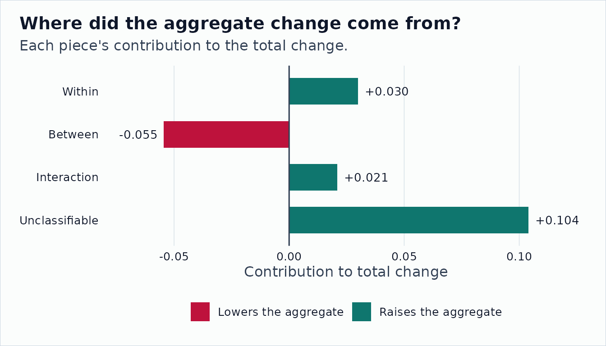

Within-Versus-Between Decomposition
Source:vignettes/within-between-decomposition.Rmd
within-between-decomposition.RmdAggregate changes can come from two places. Occupations can change internally, or employment can shift toward occupations that already had different scores. The honest answer is usually “both, a little,” which is exactly what a decomposition is for. With O*NET, the within term needs an extra gate: only rows that survive the comparability checks should be counted as safely comparable within-occupation change.
A Fixture-Derived Example
archive_base <- system.file("extdata", "onet-mini", package = "onet2r")
cross_panel <- onet_panel(
"Abilities",
versions = c("24.3", "25.1"),
scale = "IM",
archives = c(
`24.3` = file.path(archive_base, "db_24_3_text"),
`25.1` = file.path(archive_base, "db_25_1_text")
),
release_dates = c(`24.3` = "2020-08-01", `25.1` = "2020-11-01")
)
bridge <- tibble::tibble(
from_vintage = "2010",
to_vintage = "2019",
from_onet_soc_code = c("15-1132.00", "15-1132.00", "29-1141.00"),
to_onet_soc_code = c("15-1252.00", "15-1253.00", "29-1141.00"),
map_type = c("split", "split", "one_to_one"),
crosswalk_weight = c(0.5, 0.5, 1)
)
ability_changes <- onet_panel_reconcile(cross_panel, bridge)
score_changes <- ability_changes |>
filter(element_id == "1.A.1.a.1", !is.na(from_value), !is.na(to_value)) |>
mutate(reference_soc_code = sub("\\.\\d{2}$", "", to_onet_soc_code))
from_scores <- score_changes |>
select(
reference_soc_code,
measure_score = from_value,
safely_comparable
)
to_scores <- score_changes |>
select(
reference_soc_code,
measure_score = to_value,
safely_comparable
)
from_weights <- tibble::tibble(
reference_soc_code = c("15-1252", "15-1253", "29-1141"),
employment = c(120, 80, 200)
)
to_weights <- tibble::tibble(
reference_soc_code = c("15-1252", "15-1253", "29-1141"),
employment = c(170, 110, 160)
)
from_scores |>
onet_kable()| reference_soc_code | measure_score | safely_comparable |
|---|---|---|
| 15-1252 | 4.2 | FALSE |
| 15-1253 | 4.2 | FALSE |
| 29-1141 | 4.6 | TRUE |
to_scores |>
onet_kable()| reference_soc_code | measure_score | safely_comparable |
|---|---|---|
| 15-1252 | 4.48 | FALSE |
| 15-1253 | 4.30 | FALSE |
| 29-1141 | 4.66 | TRUE |
The comparability flag comes from
onet_panel_reconcile(), not from a hand-labeled example
table. Rows that cross the split with transition data are kept in the
accounting but do not get treated as clean within-occupation change.
decomp <- onet_decompose_change(
from_scores,
to_scores,
from_weights,
to_weights
)
decomp |>
select(component, value) |>
onet_kable()| component | value |
|---|---|
| within | 0.030 |
| between | -0.055 |
| interaction | 0.021 |
| unclassifiable | 0.104 |
| total_change | 0.100 |
onet_coverage(decomp) |>
onet_kable()| n_common | n_safely_comparable | leakage |
|---|---|---|
| 3 | 1 | 0 |
components <- decomp |>
filter(component != "total_change") |>
mutate(
component = factor(component, levels = component),
start = dplyr::lag(cumsum(value), default = 0),
end = start + value,
direction = if_else(value >= 0, "Positive", "Negative")
)
ggplot2::ggplot(components, ggplot2::aes(x = component)) +
ggplot2::geom_rect(
ggplot2::aes(
xmin = as.numeric(component) - 0.35,
xmax = as.numeric(component) + 0.35,
ymin = pmin(start, end),
ymax = pmax(start, end),
fill = direction
)
) +
ggplot2::geom_hline(yintercept = 0, color = onet2r_colors[["slate"]]) +
ggplot2::scale_x_discrete(labels = function(x) gsub("_", " ", x)) +
ggplot2::scale_fill_manual(
values = c(Positive = onet2r_colors[["teal"]], Negative = onet2r_colors[["rose"]])
) +
ggplot2::labs(
title = "Where Did the Aggregate Change Come From?",
subtitle = "Unsafe within movement is isolated in the unclassifiable bucket.",
x = NULL,
y = "Contribution to change",
fill = NULL
) +
onet2r_theme()
The component rows other than total_change sum to the
total change.
decomp |>
summarise(
component_sum = sum(value[component != "total_change"]),
total_change = value[component == "total_change"],
difference = component_sum - total_change
) |>
onet_kable()| component_sum | total_change | difference |
|---|---|---|
| 0.1 | 0.1 | 0 |
A Demographic Split
The same decomposition can be run after users prepare weight panels for demographic cells. The package does not download raw PUMS data in examples, but the fixture below follows the same reference-SOC, cell, employment shape.
from_weights_by_sex <- tibble::tibble(
reference_soc_code = c("15-1252", "29-1141", "15-1252", "29-1141"),
sex = c("F", "F", "M", "M"),
employment = c(40, 70, 60, 30)
)
to_weights_by_sex <- tibble::tibble(
reference_soc_code = c("15-1252", "29-1141", "15-1252", "29-1141"),
sex = c("F", "F", "M", "M"),
employment = c(70, 50, 80, 0)
)
split_results <- lapply(unique(from_weights_by_sex$sex), function(cell) {
result <- onet_decompose_change(
from_scores,
to_scores,
from_weights_by_sex |> filter(sex == cell),
to_weights_by_sex |> filter(sex == cell)
)
result$sex <- cell
result
}) |>
purrr::list_rbind()
split_results |>
select(sex, component, value) |>
onet_kable()| sex | component | value |
|---|---|---|
| F | within | 0.038 |
| F | between | -0.088 |
| F | interaction | 0.048 |
| F | unclassifiable | 0.102 |
| F | total_change | 0.100 |
| M | within | 0.020 |
| M | between | -0.133 |
| M | interaction | 0.073 |
| M | unclassifiable | 0.187 |
| M | total_change | 0.147 |
Each cell has its own weight shift and its own unclassifiable bucket. That is the part reviewers need to see when an aggregate result depends on vintage bridges, source dates, or task-handling choices.